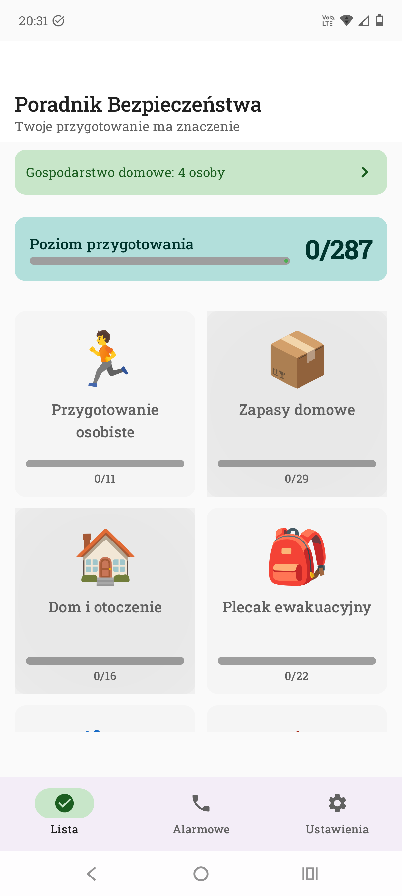
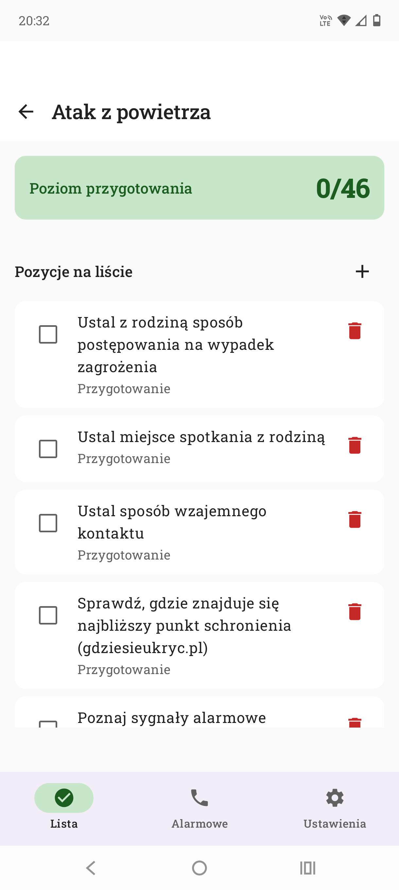
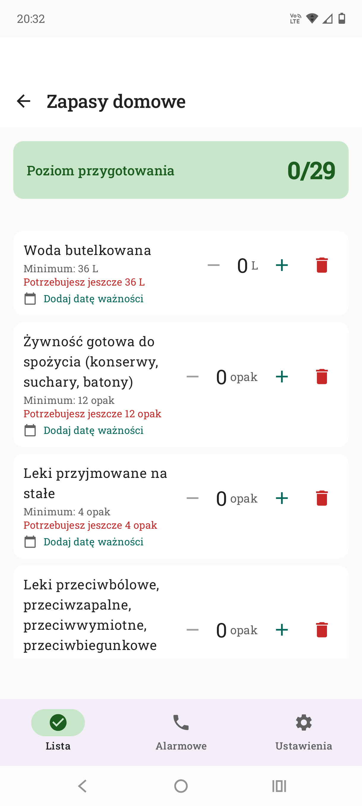
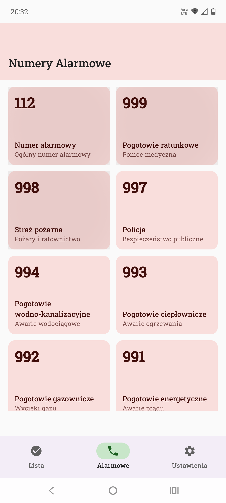
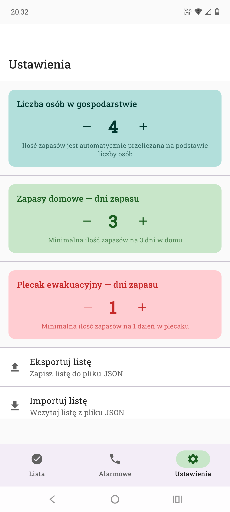
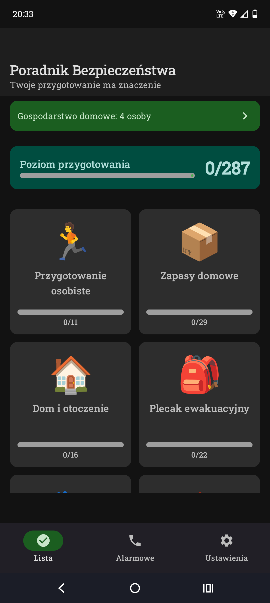
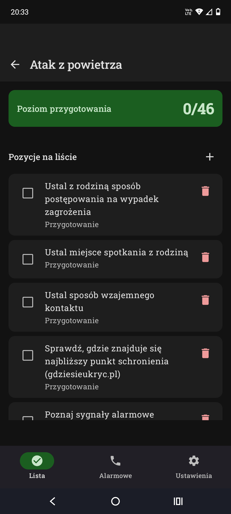
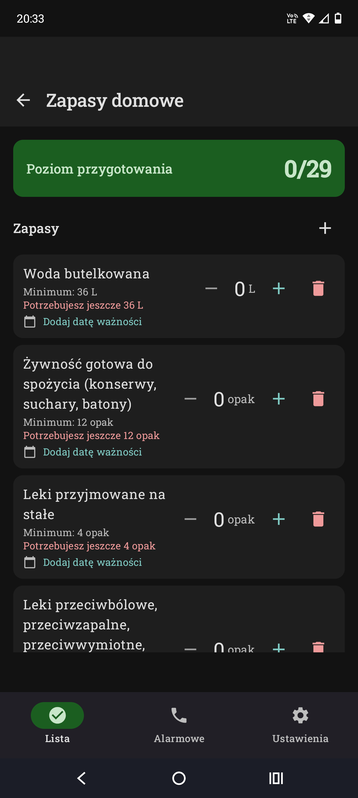
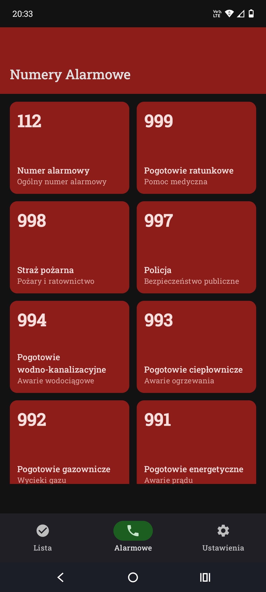
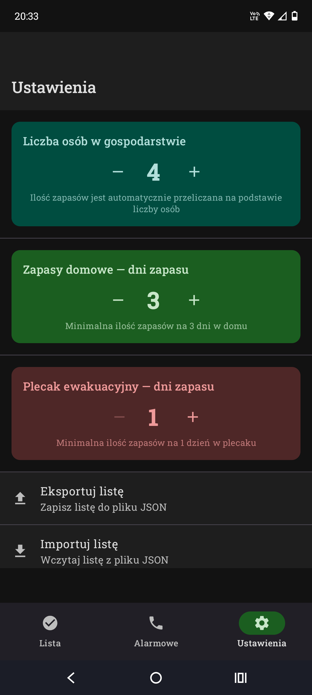

Przygotuj się na wypadek zagrożenia
Aplikacja oparta na oficjalnych publikacjach rządowych
📥 Pobierz za darmo„Poradnik Bezpieczeństwa" to aplikacja androidowa pomagająca w przygotowaniu na wypadek zagrożenia. Zawiera kompleksowe listy kontrolne, zarządzanie zapasami oraz szybki dostęp do numerów alarmowych — wszystko działa całkowicie offline.
Źródła treści:

Ekran główny

Listy kontrolne

Zarządzanie zapasami

Numery alarmowe

Ustawienia

Ekran główny

Listy kontrolne

Zarządzanie zapasami

Numery alarmowe

Ustawienia
21 kategorii przygotowania — od zdrowia, przez zapasy, po plan kryzysowy i dekalog bezpieczeństwa.
Automatyczne przeliczanie zapasów na liczbę osób w gospodarstwie domowym. Śledź ilości i daty ważności.
Szybki dostęp do numerów 112, 999, 998, 997 i innych służb ratowniczych z możliwością bezpośredniego dzwonienia.
Wszystkie dane przechowywane lokalnie na Twoim urządzeniu. Żadne informacje nie są wysyłane ani udostępniane.
Kopia zapasowa danych w formacie JSON. Przenieś dane między urządzeniami lub przywróć po aktualizacji.
Wsparcie dla jasnego i ciemnego motywu systemowego. Wygodne użytkowanie w każdych warunkach.
Bezpieczeństwo i prywatność to nasz priorytet. Oto dlaczego możesz zaufać tej aplikacji:
Pełny kod źródłowy dostępny na GitHubie pod licencją GPLv3. Możesz zweryfikować, co robi aplikacja.
Aplikacja nie zbiera, nie wysyła i nie udostępnia żadnych danych osobowych. Żadnych_analityk, żadnych trackingów.
Aplikacja nie posiada uprawnień do internetu. Nie może wysyłać danych nigdzie — nawet jeśli by chciała.
Release APK jest kryptograficznie podpisany. Możesz zweryfikować autentyczność pliku.
⚠️ Uwaga: Niniejsza aplikacja NIE jest oficjalną aplikacją rządową. Została opracowana niezależnie na podstawie publicznie dostępnych publikacji rządowych. W sytuacji zagrożenia zawsze stosuj się do poleceń służb ratowniczych i państwowych.
Instalacja jest prosta i zajmuje kilka minut. Postępuj zgodnie z poniższymi krokami:
Kliknij przycisk pobierania poniżej. Plik zostanie pobrany na Twoje urządzenie.
Przejdź do Ustawienia → Bezpieczeństwo (lub Ustawienia → Aplikacje → Specjalne uprawnienia) i włącz „Instaluj nieznane aplikacje" dla menedżera plików lub przeglądarki.
Znajdź pobrany plik SafetyGuide-1.0.0-release.apk i kliknij go.
Poczekaj na zakończenie instalacji. Gotowe! Możesz otworzyć aplikację.
Uwaga: Google Play Protect może wyświetlić ostrzeżenie przy instalacji aplikacji spoza Play Store. To normalne dla każdej aplikacji dystrybuowanej poza Play Store. Możesz bezpiecznie kliknąć „Zainstaluj mimo to" lub „Zainstaluj bez skanowania" — aplikacja nie zawiera żadnego złośliwego oprogramowania.
Aplikacja została zaprojektowana z myślą o prywatności. Opublikowanie w Play Store wymagałoby integracji z usługami Google, co sprzeciwia się podejściu „zero danych". Aplikacja jest w 100% offline i nie wymaga żadnych usług zewnętrznych.
Tak. Aplikacja jest open source (GPLv3), nie zbiera danych, nie wymaga dostępu do internetu, a release APK jest podpisany kryptograficznie. Możesz zweryfikować kod źródłowy na GitHubie przed instalacją.
Pobierz nową wersję APK z tej strony i zainstaluj ją tak samo jak pierwszą wersję. Postęp (zaznaczone pozycje, ilości zapasów) zostanie zachowany.
Nie. Dane są przechowywane lokalnie w bazie SQLite i nie są usuwane przy aktualizacji. Zalecamy jednak okresowy eksport kopii zapasowej (Ustawienia → Eksportuj listę).
Nie. Aplikacja jest niezależnym projektem opartym na oficjalnych publikacjach rządowych. Nie jest oficjalną aplikacją rządową i nie jest z nimi powiązana.
Tak! Udostępnij ten link lub plik APK. Aplikacja jest dystrybuowana na licencji GPLv3, więc możesz ją swobodnie udostępniać.